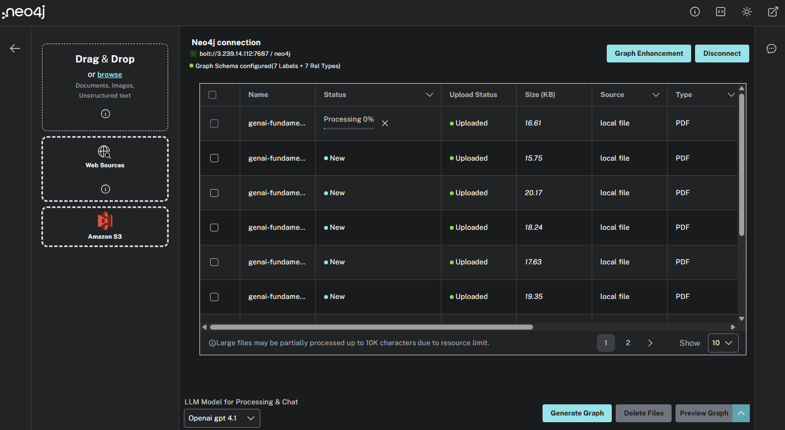

Complete the Graph
Currently, the graph is built from a single document.
In this challenge, you will upload the complete set of course documents and build the knowledge graph.
You will need to:
-
Download the generative-ai.zip file that contains all the lessons from the Neo4j and Generative AI course.
-
Unzip the file.
-
Upload the
genai-fundamentals_*.pdffiles to the LLM Graph Builder. -
Generate the knowledge graph.
You can use this Cypher query to view all the documents in the graph:
MATCH (d:Document)
RETURN d.fileName AS Document, d.createdAt
ORDER BY d.createdAtExplore the graph and use the chatbot to ask questions about the course content, for example:
-
What are knowledge graphs?
-
Summarise strategies for reducing hallucination?
-
What are the features of the neo4j_graphrag Python package?
When you have completed the challenge, move on to the next lesson.
read::Move On[]
Lesson Summary
In this lesson, you uploaded multiple documents and built a knowledge graph.
In the next module, you will explore the data model, and learn how to query the knowledge graph using Cypher.